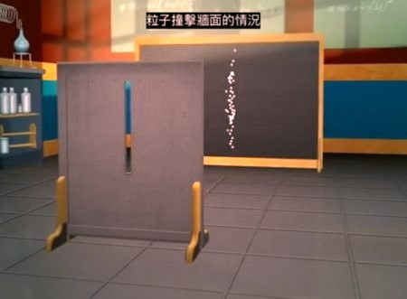
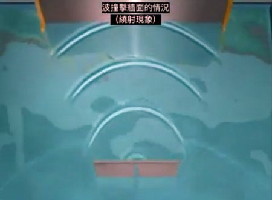
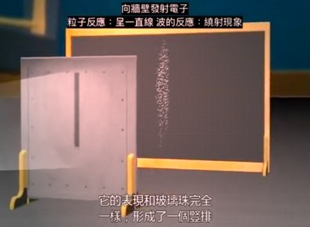
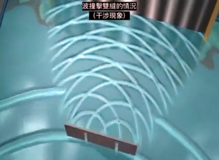
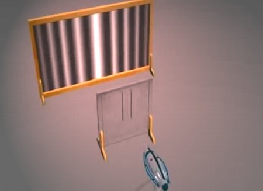
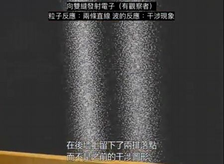

干涉
（波粒二象性實驗）
請確保你以閲讀干涉的教學
實驗重點重溫
單縫 |
||
|  | 當粒子通過單縫， 粒子通過後會呈一直綫。 |
|
當波通過單縫， 最强的一點為波的中間。 |
 | |
 當細小物質（實驗中使用電子）通過單縫， 也會出現一條直綫。 |
||
雙縫 |
||
 |
當粒子通過雙縫， 粒子通過後會呈兩條直綫。 |
|
當波通過雙縫， 波通過後會呈干涉圖像。 |
 | |
 當細小物質（實驗中使用電子）通過雙縫， 也呈干涉圖像。 證明細小物質（例如光和電子）都具有波的性質 |
||
加入觀察者 |
||
 但當科學家加入觀察者查看波是通過哪一條縫隙時， 卻發粒子呈現兩條綫。 由此，科學家得出電子（和光）都具有波粒二象性。 |
||